вилка стакан
digital kiddie, low-skill coder, ham-handed designer, fake artist, shitposter,
production @ Комитет (TJournal, DTF, vc.ru)
vilka stakan (rus. “вилка стакан”) can be translated as “plug glass”.
plug for my laptop and a glass of water for me to stay hydrated
my real name is Vikentiy, but you can call me Vik or Vilk
follow/like: telegram, github, behance, glitch
listen to: my new track about february'22. also soundcloud, spotify playlists
contact: me@vlk.st, tlg @lVLKl, discord вилкастакан#1312
projects
 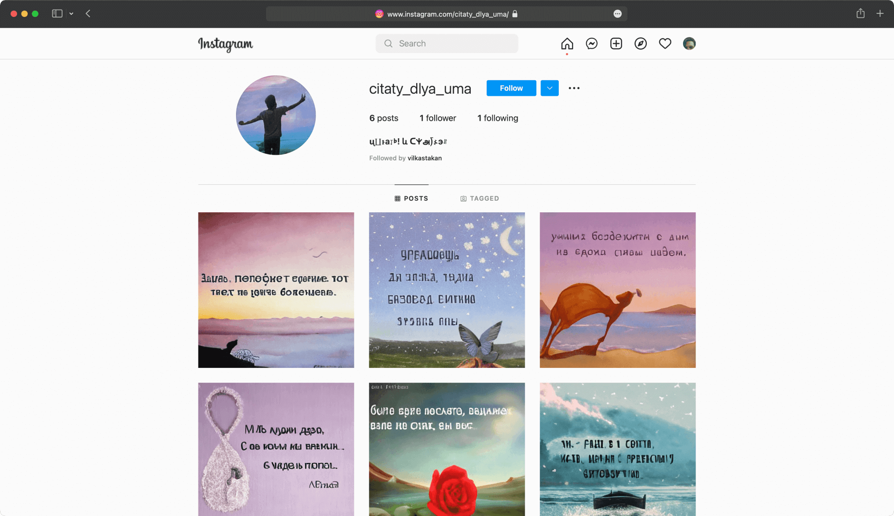
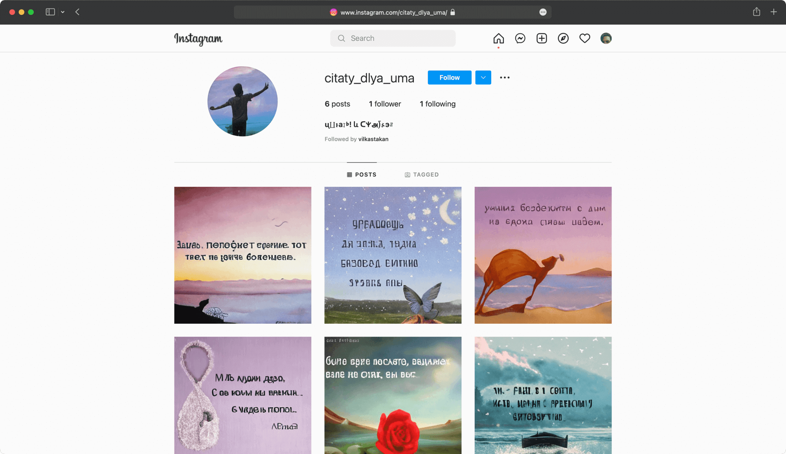 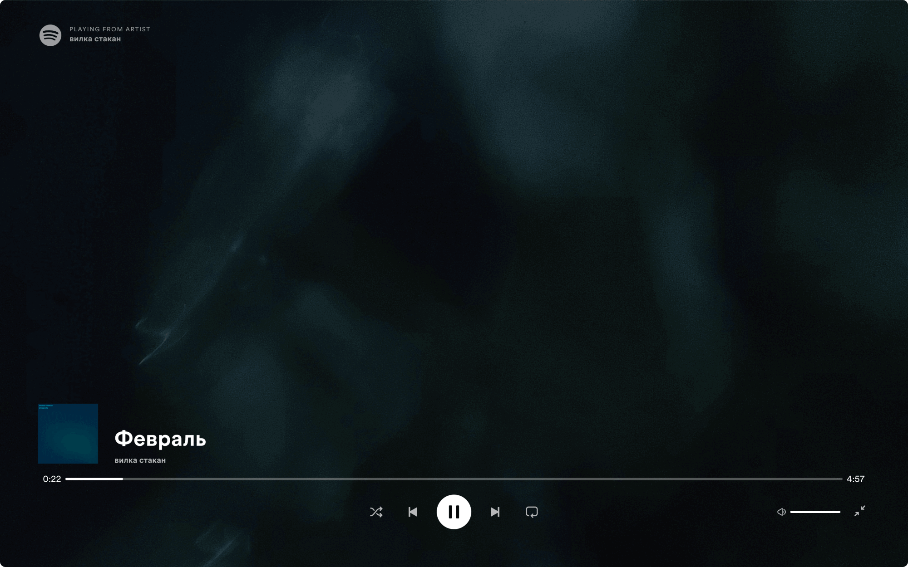
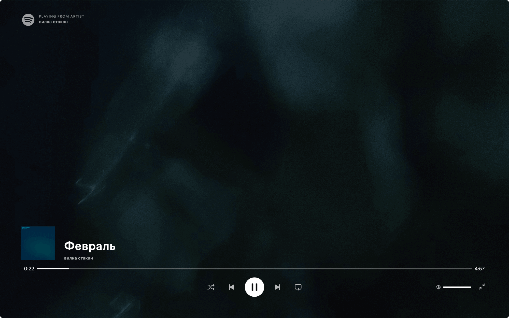

 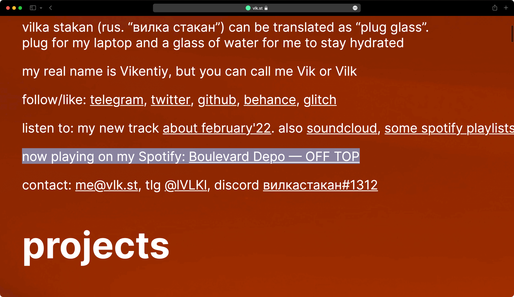
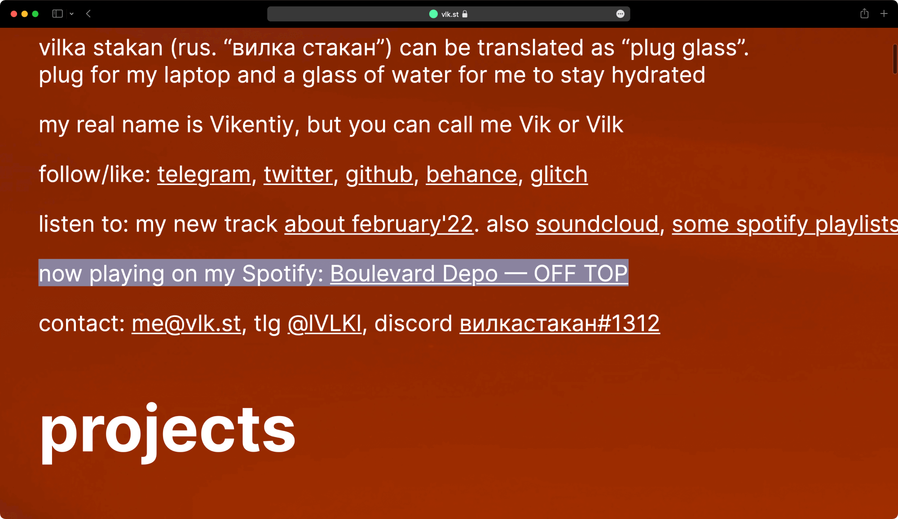
 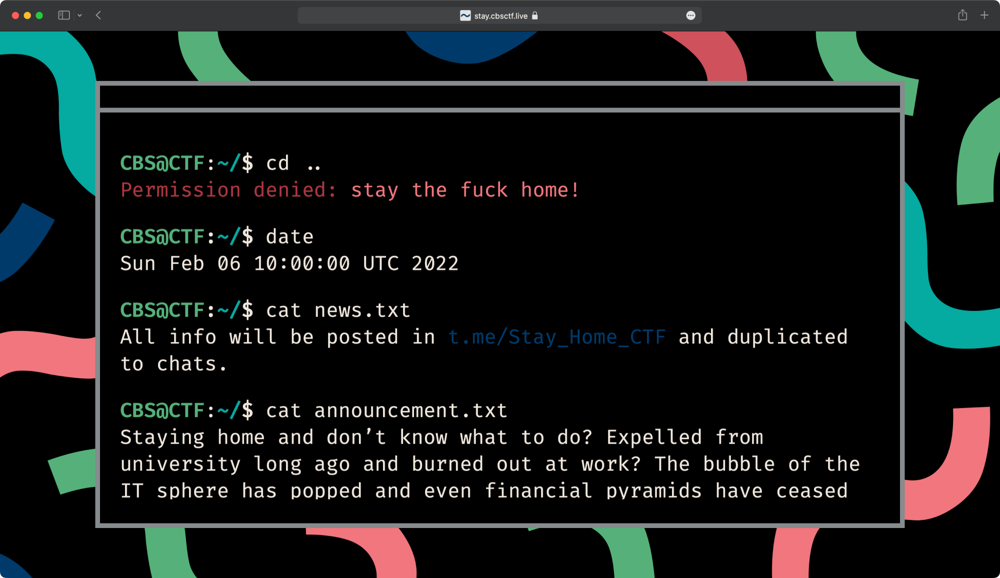
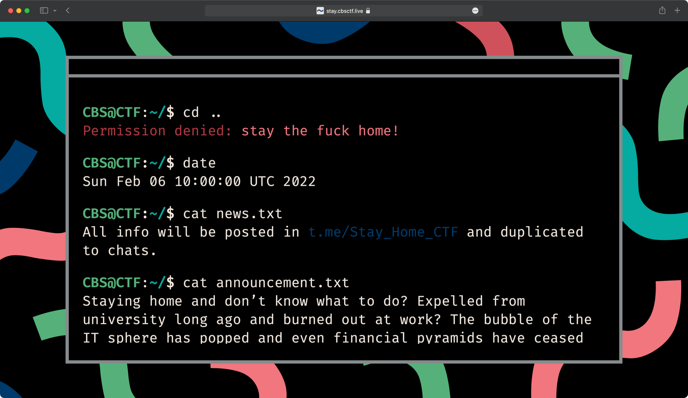 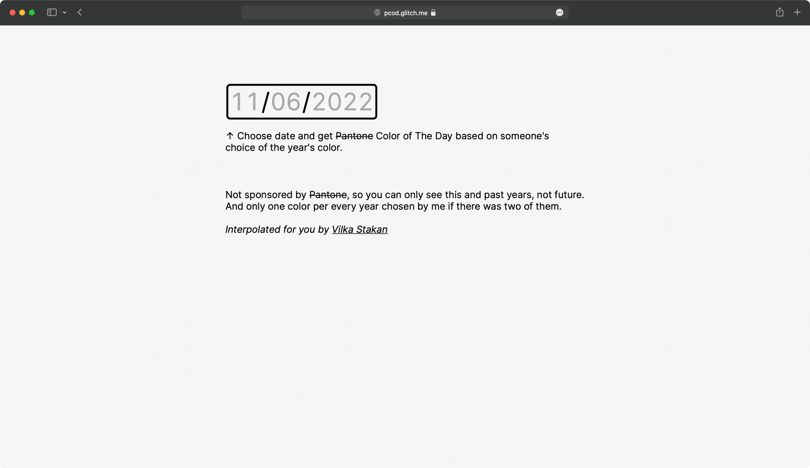
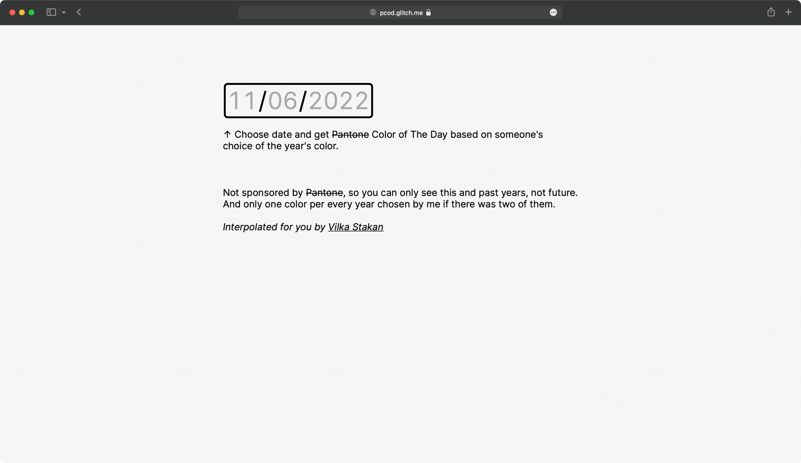 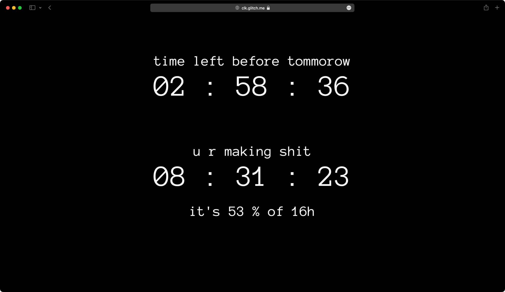
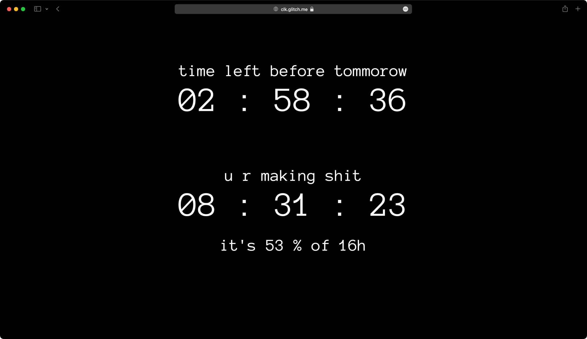Ну тут идея такая, что фон — это как бы небо, всё белое-серое — это облака, там наверху вот были солнце или луна.
И вот травка, но я её не сам рисовал, если честно: